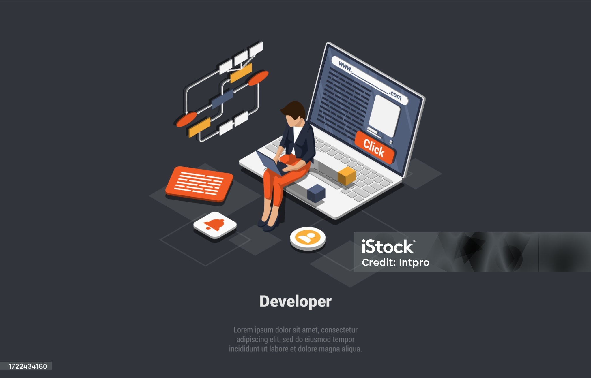
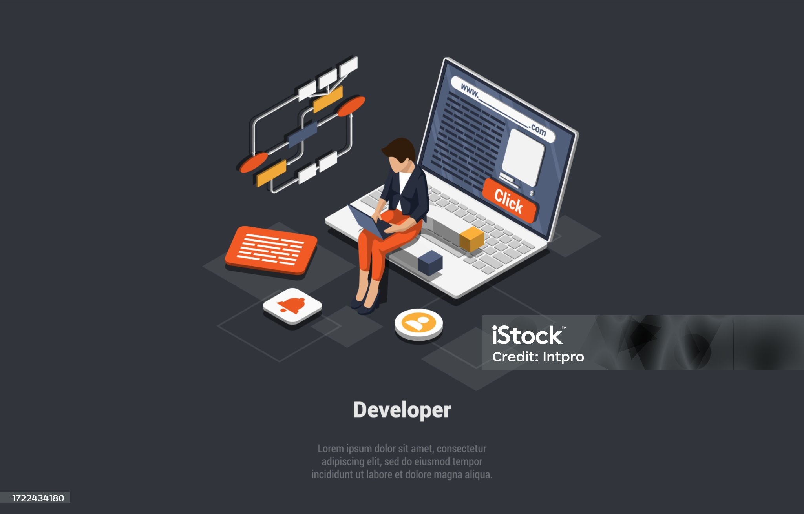

Relatório de Aprendizado
Darlan Rodrigues Schmeller - 08/05/2025
Resumo de Atividades Desempenhadas
Durante o Terceiro Período

Durante o terceiro período do curso, foram estudados e aplicados diversos conceitos fundamentais do desenvolvimento web utilizando HTML e, em alguns casos, noções básicas de CSS. As atividades propostas tiveram como objetivo principal o domínio da estruturação de páginas web utilizando apenas HTML, permitindo que o aluno compreendesse o papel de cada elemento na construção de conteúdos digitais.
Inicialmente, foram explorados os formulários, onde se aprendeu a criar campos interativos como caixas de texto, opções de seleção, botões, áreas de texto e outros componentes essenciais para capturar informações do usuário. Em seguida, foi trabalhada a criação de murais informativos, como o Mural de Cães, utilizando títulos, parágrafos, imagens e elementos de destaque para simular uma página de apresentação com descrição e diferenciação de conteúdo. Além disso, foram desenvolvidas páginas de receitas, como a de omelete e a de torta de limão, aplicando o uso correto de listas ordenadas e não ordenadas, além da organização lógica das informações em blocos bem definidos com títulos e parágrafos. Por fim, foram abordadas as tabelas HTML, nas quais se compreendeu a importância da organização tabular de dados, utilizando elementos como table, thead, tbody, tr, th e td para listar e estruturar informações de maneira clara e acessível.
As atividades de tabela de equipamentos e tabela de produtos serviram para reforçar esse aprendizado, destacando como representar dados de maneira eficiente. Todas essas atividades permitiram ao aluno adquirir uma base sólida na marcação de documentos HTML, desenvolvendo a capacidade de estruturar páginas funcionais e bem organizadas sem o uso de estilos avançados ou scripts adicionais.
Resumo das Atividades Executadas
1. Formulário Avançado
Atividade focada na criação de um formulário HTML utilizando elementos como input (text, email, checkbox, radio), select, textarea e botão. Os campos foram organizados com labels para facilitar o uso e garantir acessibilidade. A proposta era explorar os principais componentes de um formulário completo com validações básicas em HTML.
2. Mural de Cães
Desenvolvimento de um mural de raças de cachorro usando HTML. Foram utilizados elementos como imagens, títulos (h1, h2), parágrafos e spans para descrever as características de cada raça. Cada seção apresentava os prós e contras de forma descritiva, simulando uma vitrine informativa sobre cães.
3. Receita de Omelete
Página com a receita de uma omelete utilizando listas ordenadas (ol) para o passo a passo e listas não ordenadas (ul) para os ingredientes. A estrutura foi feita com blocos simples de HTML, destacando as etapas da receita de forma clara e organizada.
4. Receita de Torta de Limão
Estrutura semelhante à da receita de omelete, agora com foco em uma sobremesa. A página utilizou listas para ingredientes e modo de preparo, com título e parágrafos para introdução e descrição da receita. A atividade reforçou a prática de organizar conteúdo culinário em HTML.
5. Tabela de Equipamentos
Criação de uma tabela utilizando os elementos table, thead, tbody, tr, th e td. Foram listados equipamentos com informações como nome, tipo e quantidade. A estrutura buscava organizar os dados de forma lógica e clara, facilitando a leitura e comparação dos itens.
6. Tabela de Produtos
Atividade semelhante à tabela de equipamentos, mas agora com foco em produtos. A tabela incluía colunas como nome, categoria, preço e disponibilidade. Essa atividade reforçou o uso correto da estrutura de tabelas em HTML para exibir informações tabulares de forma acessível.